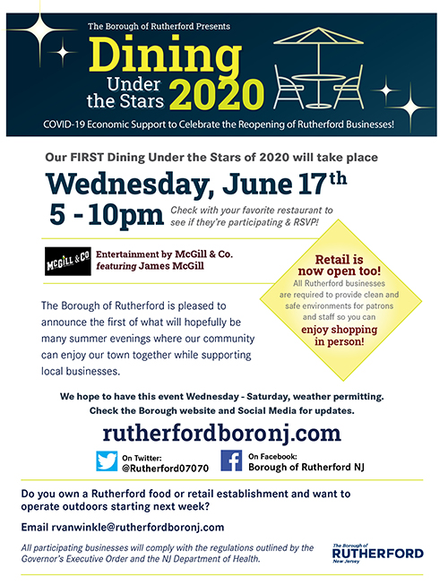

The Borough of Rutherford is pleased to announce the first of hopefully many summer evenings where our community can enjoy our town together while supporting local businesses.
Dining Under the Stars 2020 will be an ongoing event throughout the summer. The Borough will closely monitor the weather to determine which days will provide the most enjoyable outdoor experiences. We will do our best to update you with street closures and participating restaurants and businesses as that information becomes available.
When dining out, it is strongly recommended that you make reservations so that our restaurants can better prepare for their evening. Please remember that business owners, staff and patrons are all creating a new normal as this chapter of reopening begins. Be respectful and patient with each other!
All participating businesses will comply with the regulations outlined by the Governor’s Executive Order and the NJ Department of Health.
Are you a Rutherford business owner? See the link below where you can find necessary forms and information for operating outdoors. Email rvanwinkle@rutherfordboronj.com with any questions